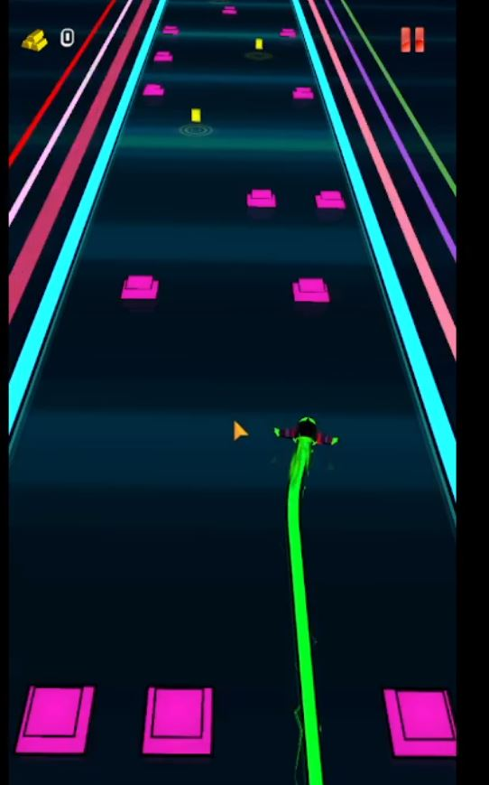
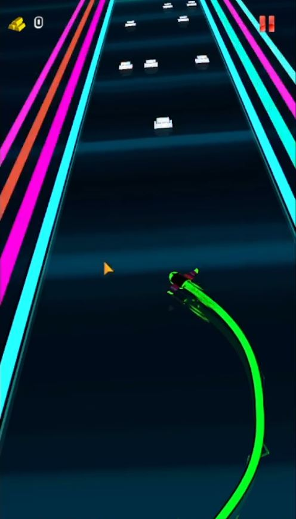
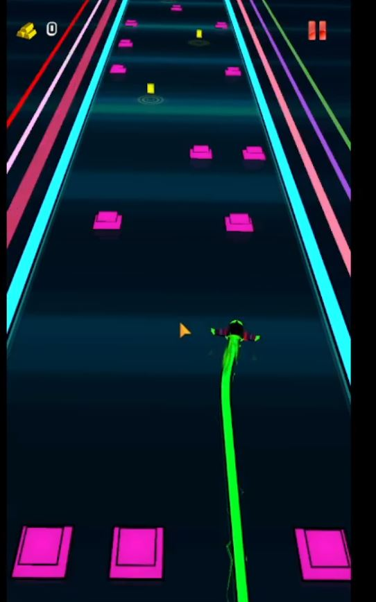
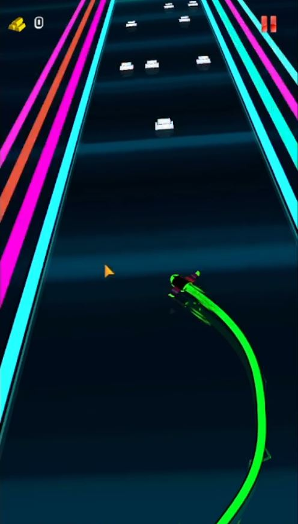
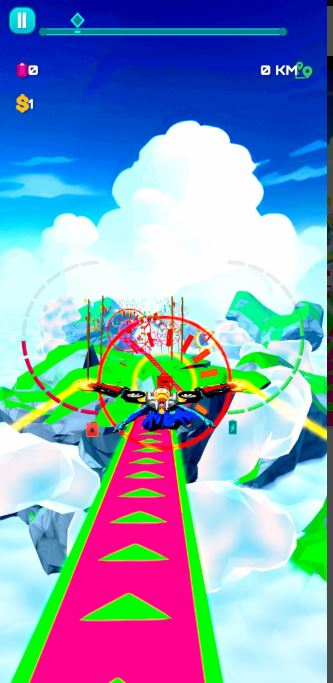
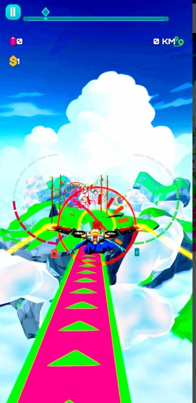

🚀 Zero-Metrix Projects
Hit 3D
Helix-jump inspired arcade game using physics-based controls and color feedback. Built with mobile-optimized performance and level-based progression.


Neo Drive
A rhythm-driven racing game where environments glow to the beat. Combines motion blur and post-processing for a cyber-futuristic aesthetic.


 



Rocketman
A rocket-launching adventure featuring physics controls, coin collection, and level goals. Includes power-ups and explosion particle effects.

 
